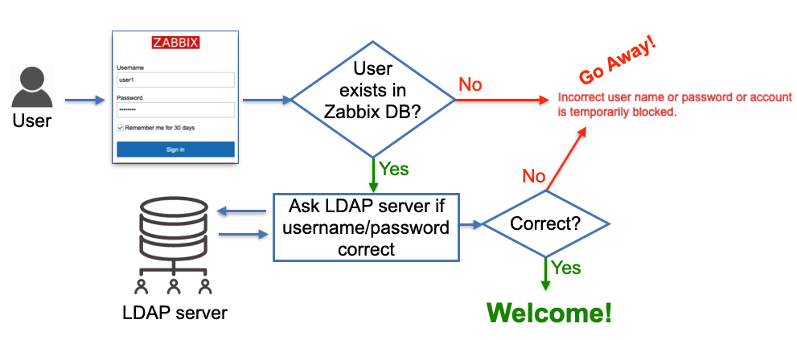
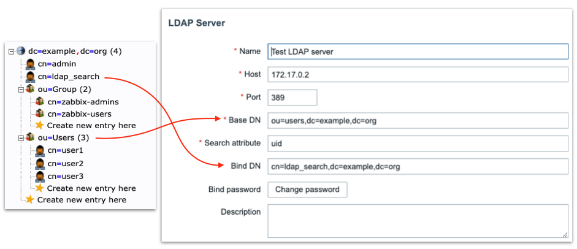
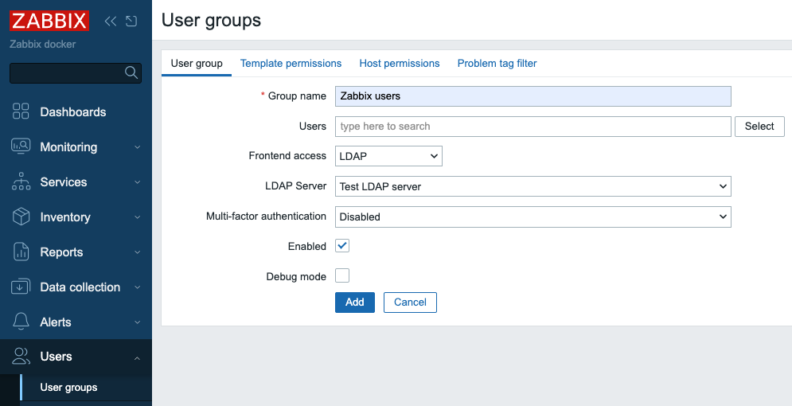
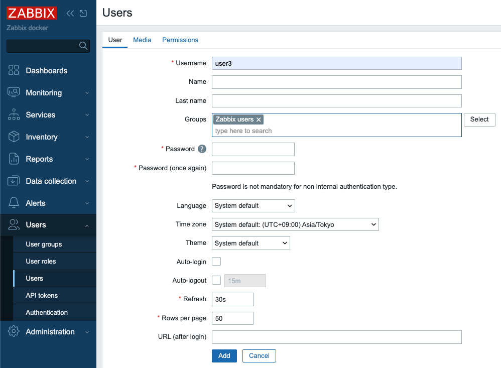
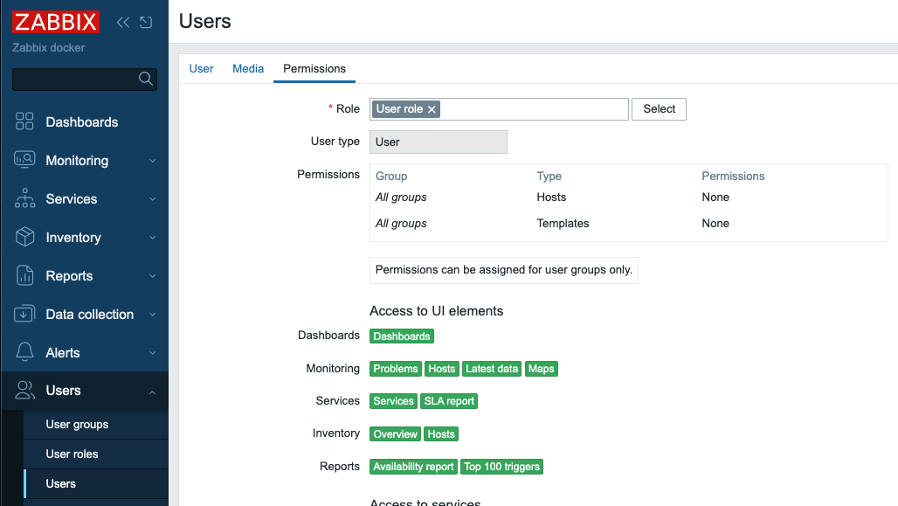
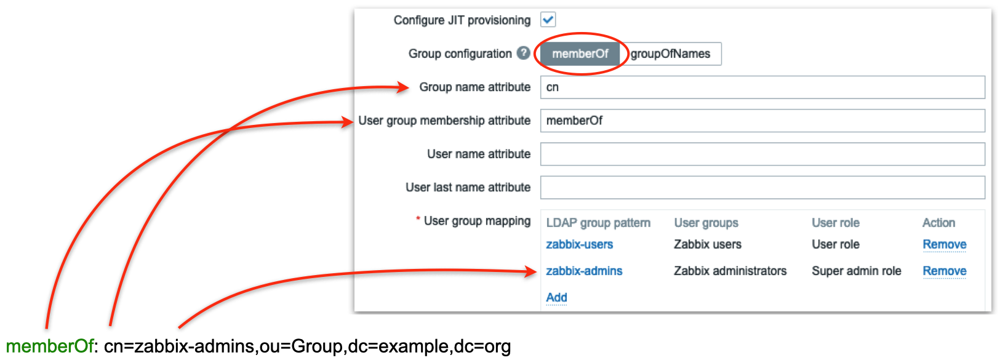

LDAP / AD
Como qualquer sistema moderno, o Zabbix pode realizar a autenticação de usuários usando o Lightweight Directory Access Protocol (LDAP). Em teoria, o LDAP é um protocolo aberto muito bem definido que deve ser independente do fornecedor, mas sua complexidade relativa desempenha um papel importante em cada implementação de servidor LDAP. O Zabbix é conhecido por trabalhar bem com o Microsoft Active Directory e o servidor OpenLDAP.
A autenticação LDAP pode ser configurada em dois modos:
- Autenticação de usuários
- Autenticação de usuários com provisionamento de usuários
Modo de autenticação de usuários
O processo de autenticação de usuários segue este diagrama.

2.3 Autenticação de usuários LDAP
Conforme mostrado no diagrama, um usuário que tenta fazer login deve ser pré-criado no Zabbix para poder fazer login usando o LDAP. Os registros de usuário do banco de dados não têm nenhum campo "dizendo" que o usuário será autenticado via LDAP, apenas as senhas dos usuários armazenadas no banco de dados são ignoradas; em vez disso, o Zabbix vai até um servidor LDAP para verificar se o usuário está autenticado:
- existe um usuário com um determinado nome de usuário
- o usuário forneceu a senha correta
nenhum outro atributo configurado para o usuário no lado do servidor LDAP é levado em consideração.
Portanto, quando o Zabbix é usado por muitos usuários e grupos, o gerenciamento de usuários se torna uma tarefa não muito trivial à medida que novas pessoas entram em equipes diferentes (ou saem). Esse problema é resolvido pelo "provisionamento de usuários" e abordaremos esse tópico um pouco mais tarde. Por enquanto, vamos dar uma olhada em como configurar a autenticação LDAP.
Configurar LDAP
Nesta seção, usaremos um servidor LDAP de demonstração personalizado com dados pré-carregados. Você pode configurar esse ambiente de demonstração para verificar as possibilidades de autenticação LDAP do Zabbix. Ou você pode pular a configuração do ambiente de demonstração se quiser apenas conectar sua instância do Zabbix ao seu servidor LDAP ou AD existente.
Configurar o servidor LDAP de demonstração local
Acreditamos que é melhor aprender esse tópico por meio de exemplos, portanto, usaremos nosso próprio servidor LDAP, que pode ser ativado em um contêiner para fins de demonstração. Primeiro, precisamos garantir que temos um mecanismo de contêiner instalado.
Instalar o mecanismo de contêiner do Podman
Red Hat
SUSE
Ubuntu
???+ nota "O que é Podman"?
O Podman é um mecanismo de contêiner projetado como substituto do Docker, mas com uma arquitetura sem daemon. Isso significa que ele executa contêineres diretamente sob o controle do usuário, aumentando a segurança e a simplicidade. O Podman é totalmente compatível com a CLI do Docker e oferece suporte a contêineres sem raiz, o que o torna ideal para ambientes de desenvolvimento, teste e produção em que a segurança e o isolamento são prioridades.
Dica
Se você quiser usar o Docker em vez do Podman, basta substituir todas as
ocorrências de podman nas instruções a seguir por docker.
Agora podemos iniciar os contêineres. Inicie um servidor OpenLDAP em um contêiner:
Inicie um servidor OpenLDAP em um contêiner com dados pré-carregados
Para simplificar, todos os usuários (incluindo ldap_search) nesse servidor
LDAP de teste têm a palavra e a senha como suas senhas.
Os usuários user1 e user2 são membros do grupo LDAP zabbix-admins. Usuário
user3 é membro do grupo LDAP zabbix-users.
???+ dica Dica: use o phpLdapAdmin como uma GUI LDAP
To visually see LDAP server data (and add your own configuration like users
and groups) you can start this standard container:
```bash
podman run -p 8081:80 -p 4443:443 --name phpldapadmin --hostname phpldapadmin\
--link openldap-server:ldap-host --env PHPLDAPADMIN_LDAP_HOSTS=ldap-host\
--detach osixia/phpldapadmin:0.9.0
```
Now you can access this LDAP server via https://<ip_address>:4443 (or any
other port you configure to access this Docker container), click Login,
enter “cn=admin,dc=example,dc=org” in Login DN field and “password” in
Password field, click Authenticate. You should see the following structure
of the LDAP server (picture shows ‘zabbix-admins’ group configuration):
{ align=center }
_2.4 LDAP server data_
Configurar a autenticação LDAP do Zabbix
Vamos definir as configurações do servidor LDAP no Zabbix. No menu do Zabbix,
selecione Users | Authentication | LDAP settings e, em seguida, marque a caixa
de seleção Enable LDAP authentication e clique em Add em Servers (altere o
endereço IP do servidor LDAP e o número da porta de acordo com a sua
configuração):

2.5 Configurações do servidor LDAP no Zabbix
O diagrama a seguir pode ajudá-lo a entender como configurar o servidor LDAP no Zabbix com base na estrutura de dados do seu servidor LDAP:

2.6 Servidor LDAP para Zabbix
"Especial" Distinguished Name (DN) cn=ldap_search,dc=example,dc=org é usado para pesquisa, ou seja, o Zabbix usa esse DN para se conectar ao servidor LDAP e, é claro, quando você se conecta ao servidor LDAP, precisa ser autenticado - é por isso que você precisa fornecer Bind password. Esse DN deve ter acesso a uma subárvore na hierarquia de dados LDAP onde todos os seus usuários estão configurados. No nosso caso, todos os usuários configurados "sob" ou=Users,dc=example,dc=org, esse DN é chamado de DN de base e usado pelo Zabbix como, por assim dizer, "ponto de partida" para iniciar a pesquisa.
Aviso "Ligação LDAP anônima"
Technically it is possible to bind to the LDAP server anonymously, without
providing a password but this is a huge breach in security as the whole
users sub-tree becomes available for anonymous (unauthenticated) search,
i.e. effectively exposed to any LDAP client that can connect to LDAP server
over TCP. The LDAP server we deployed previously in Docker container does
not provide this functionality.
Clique no botão Test e digite user1 e password nos respectivos campos. O
teste deve ser bem-sucedido, confirmando que o Zabbix pode autenticar usuários
no servidor LDAP.
Dica
We can add multiple LDAP servers and use them for different User groups.
Para testar o login de usuários reais usando a autenticação LDAP, precisamos
criar grupos de usuários e usuários no Zabbix. No menu do Zabbix, selecione
Usuários | Grupos de usuários. Certifique-se de que o grupo Zabbix
administrators existe (precisaremos dele mais tarde) e crie um novo grupo
Zabbix users clicando no botão Create user group. Digite "Zabbix users" no
campo Group name, selecione "LDAP" no menu suspenso Frontend access que fará
com que o Zabbix autentique os usuários pertencentes a esse grupo no servidor
LDAP e no menu suspenso LDAP server selecione o servidor LDAP que configuramos
anteriormente "Test LDAP server". Clique no botão Add para criar esse grupo de
usuários:

2.7 Adicionar grupo de usuários no zabbix
Agora precisamos criar nosso usuário de teste. No menu do Zabbix, selecione
Users | Users e clique no botão Create user. Em seguida, digite "user3" no
campo Username. Selecione "Zabbix users" no campo Groups. O que você digitar
nos campos Password e Password (mais uma vez) não importa, pois o Zabbix não
tentará usar essa senha; em vez disso, ele irá para o servidor LDAP para
autenticar esse usuário, já que ele é membro do grupo de usuários que tem o
método de autenticação LDAP, apenas certifique-se de digitar a mesma cadeia de
caracteres nesses dois campos e de que ela atenda à política de força da senha
definida em Users | Authentication.

{ align=center }2.8 Adicionar usuário no Zabbix
Em seguida, clique nEm seguida, clique na guia Permissions (Permissões) e
selecione "User role" (Função do usuário) no campo Role (Função):a guia
Permissions (Permissões) e selecione "User role" (Função do usuário) no campo
Role (Função):

2.9 Adicionar usuário no Zabbix - permissões
Clique no botão Add para criar o usuário.
Estamos prontos para testar a autenticação do nosso servidor LDAP! Clique em
Sign out no menu do Zabbix e faça login com "user3" como nome de usuário e
"password" como Password, se você seguiu cuidadosamente as etapas acima,
deverá fazer login com sucesso com permissões de função de usuário.
Clique em . Saia do site novamente e faça login como administrador para
continuar.
Provisionamento de usuários Just-in-Time
Agora vamos falar sobre um recurso muito legal que o Zabbix oferece - "Provisionamento de usuário Just-in-Time (JIT) disponível desde o Zabbix 6.4.
Esta imagem ilustra em alto nível como isso funciona: 
2.10 Explicação do LDAP JIT
Aqui, quando o Zabbix obtém um nome de usuário e senha do formulário de login do
Zabbix, ele vai até o servidor LDAP e obtém todas as informações disponíveis
para esse usuário, incluindo sua associação a grupos LDAP e endereço de e-mail.
Obviamente, ele obtém tudo isso somente se o nome de usuário e a senha corretos
(do ponto de vista do servidor LDAP) tiverem sido fornecidos. Em seguida, o
Zabbix passa pelo mapeamento pré-configurado que define os usuários de qual
grupo LDAP vai para qual grupo de usuários Zabbix . Se pelo menos uma
correspondência for encontrada, um usuário do Zabbix será criado no banco de
dados do Zabbix, pertencente a um grupo de usuários do Zabbix e com uma
função de usuário do Zabbix , de acordo com a "correspondência" configurada.
Até agora parece bem simples, certo? Agora vamos entrar em detalhes sobre como
tudo isso deve ser configurado.
Em Users | Authentication, precisamos fazer duas coisas:
-
Defina
Autenticação padrãopara LDAP. Quando o JIT está desativado, o tipo de autenticação é definido com base no grupo de usuários __ ao qual o usuário que tenta fazer o login pertence. No caso do JIT, o usuário ainda não existe no Zabbix e, portanto, obviamente não pertence a nenhum grupo de usuários __ , portanto, o método de autenticação Padrão é usado e queremos que seja LDAP. -
Forneça
Grupo de usuários desprovisionados. Esse grupo deve ser literalmente desativado, caso contrário você não poderá selecioná-lo aqui. Este é o grupo de usuários do Zabbix onde todos os usuários desprovisionados serão colocados para que efetivamente sejam desabilitados de acessar o Zabbix.
 { align=center
}
{ align=center
}
2.11 Autenticação padrão
Clique no botão Update `.
- Habilite a caixa de seleção de provisionamento JIT, que obviamente precisa ser
marcada para que esse recurso funcione. Isso é feito na nossa configuração
Test LDAP server - selecione
Users | Authentication | LDAP settingse clique no nosso servidor na seçãoServers. Depois de ativar essa caixa de seleção, veremos alguns outros campos relacionados ao JIT a serem preenchidos, e o que colocaremos neles dependerá do método que escolhermos para executar o JIT.
Método de configuração de grupo "memberOf"
Todos os usuários em nosso servidor LDAP têm o atributo memberOf, que define a quais grupos LDAP cada usuário pertence. Por exemplo, se fizermos uma consulta LDAP para o usuário user1, veremos que o atributo memberOf tem esse valor:
memberOf: cn=zabbix-admins,ou=Group,dc=example,dc=org
Observe que o seu servidor LDAP real pode ter um atributo LDAP totalmente
diferente que fornece a associação ao grupo de usuários e, é claro, você pode
configurar facilmente qual atributo usar ao procurar grupos LDAP de usuários
colocando-o no campo User group membership attribute:

2.12 Mapeamento de grupos LDAP
Na figura acima, estamos dizendo ao Zabbix para usar o atributo memberOf para extrair o DN que define a associação do usuário ao grupo (nesse caso, é cn=zabbix-admins,out=Group,dc=example,dc=org) e pegar apenas o atributo cn desse DN (nesse caso, é zabbix-admins) para usar na busca de uma correspondência nas regras de mapeamento do grupo de usuários. Em seguida, definimos quantas regras de mapeamento quisermos. Na figura acima, temos duas regras:
- Todos os usuários pertencentes ao grupo LDAP zabbix-users serão criados no Zabbix como membros do grupo de usuários do Zabbix com a função User
- Todos os usuários pertencentes ao grupo LDAP zabbix-admins serão criados no Zabbix como membros do grupo Zabbix administrators com a função Super admin
Método de configuração de grupo "groupOfNames"
Há outro método para encontrar a associação de usuários a grupos chamado "groupOfNames", que não é tão eficiente quanto o método "memberOf", mas pode oferecer muito mais flexibilidade, se necessário. Aqui o Zabbix não está consultando o servidor LDAP para um usuário, em vez disso, ele está procurando grupos LDAP com base em um determinado critério (filtro). É mais fácil explicar com imagens que descrevem um exemplo:
 {
align=center }
{
align=center }
2.13 GroupOfNames do servidor LDAP
Primeiro, definimos a "sub-árvore" LDAP onde o Zabbix procurará por grupos LDAP
- observe ou=Group,dc=example,dc=org no campo Group base DN. Em seguida, no
campo Group name attribute, definimos o atributo a ser usado na pesquisa das
regras de mapeamento (neste caso, usamos cn, ou seja, apenas zabbix-admins
do DN completo cn=zabbix-admins,ou=Group,dc=example,dc=org). Cada grupo LDAP
em nosso servidor LDAP tem o atributo member que contém todos os usuários que
pertencem a esse grupo LDAP (veja a figura à direita), portanto, colocamos o
membro no campo Group member attribute. O DN de cada usuário nos ajudará a
construir o campo Group filter. Agora preste atenção: O campo Reference
attribute define qual atributo do usuário LDAP o Zabbix usará no Group filter , ou seja, %{ref} será substituído pelo valor desse atributo (aqui estamos
falando dos atributos do usuário - já autenticamos esse usuário, ou seja,
obtivemos todos os seus atributos do servidor LDAP). Para resumir o que eu disse
acima, o Zabbix:
- Autentica o usuário com o nome de usuário e a senha inseridos no servidor LDAP, obtendo todos os atributos LDAP do usuário
- Usa os campos
Atributo de referênciaeFiltro de grupopara construir um filtro (quando user1 fizer login, o filtro será (member=uid=user1,ou=Users,dc=example, dc=org) - Realiza uma consulta LDAP para obter todos os grupos LDAP com atributo de
membro (configurado no campo
Group member attribute) contendo o filtro construído na etapa 2) - Examina todos os grupos LDAP recebidos na etapa 3 e seleciona o atributo
cn(configurado no campoGroup name attribute) e encontra uma correspondência nas regras de mapeamento de grupos de usuários
Parece um pouco complicado, mas tudo o que você realmente precisa saber é a estrutura dos seus dados LDAP.
Pronto para testar
Agora, quando você fizer o login com o nome de usuário user1 ou user2, esses usuários serão criados pelo Zabbix e colocados no grupo de usuários Zabbix administrators. Quando você fizer o login com o nome de usuário user3, esse usuário será criado pelo Zabbix e colocado no grupo de usuários Zabbix users:

2.14 Usuário de teste1

2.15 Usuário de teste3
Conclusão
A integração do Zabbix com o LDAP - ou especificamente com o Active Directory - eleva os recursos de autenticação do seu sistema, aproveitando as credenciais organizacionais existentes. Ele permite que os usuários façam login usando credenciais de domínio conhecidas, enquanto o Zabbix transfere o processo de verificação de senha para um diretório externo confiável. É importante notar que, mesmo ao configurar a autenticação LDAP, as contas de usuário correspondentes ainda devem existir no Zabbix, embora suas senhas internas se tornem irrelevantes quando a autenticação externa estiver ativa.
Particularmente poderoso é o recurso de provisionamento Just-In-Time (JIT): ele permite que o Zabbix crie dinamicamente contas de usuário no primeiro login LDAP bem-sucedido, simplificando a integração e reduzindo a administração manual. Além disso, o JIT oferece suporte à sincronização contínua, atualizando as funções dos usuários, as associações de grupos ou até mesmo as remoções de usuários no Zabbix para refletir as alterações no LDAP, seja quando um usuário faz login ou durante os intervalos de provisionamento configurados.
Detalhes importantes de configuração, como sensibilidade a maiúsculas e minúsculas, métodos de vinculação de autenticação, filtros de pesquisa e mapeamento de grupos precisam de atenção cuidadosa para garantir uma operação confiável e segura. E, embora o LDAP ofereça uma integração perfeita, o Zabbix ainda mantém o controle sobre as funções, as permissões e o comportamento de acesso por meio de seus próprios modelos de usuários e grupos de usuários Zabbix.
Em suma, a autenticação LDAP/AD oferece uma abordagem dimensionável, segura e alinhada à empresa para centralizar o gerenciamento de identidade no Zabbix. Com provisionamento e sincronização flexíveis, as organizações podem reduzir a carga administrativa e, ao mesmo tempo, reforçar a consistência em toda a sua estratégia de controle de acesso e autenticação.
Perguntas
-
Quais são os principais benefícios de integrar a autenticação do Zabbix com LDAP ou Active Directory em comparação com o uso apenas de contas internas do Zabbix?
-
Por que um usuário ainda deve existir no Zabbix mesmo quando a autenticação LDAP está ativada e qual é o papel da senha interna nesse caso?
-
Como o provisionamento Just-In-Time (JIT) simplifica o gerenciamento de usuários no Zabbix e quais riscos potenciais ou advertências um administrador deve considerar ao habilitá-lo?
-
Qual é a diferença entre autenticação de usuário e autorização de usuário no contexto da integração do LDAP com o Zabbix? (Dica: A autenticação verifica as credenciais, enquanto a autorização determina as permissões dentro do Zabbix).
-
Imagine que um administrador configure incorretamente o filtro de pesquisa LDAP. Que problemas os usuários podem encontrar ao tentar fazer login e como você poderia solucionar o problema?
-
Como os mapeamentos de grupos LDAP poderiam ser usados para simplificar a atribuição de permissões no Zabbix? Você consegue pensar em um exemplo de seu próprio ambiente?
-
Se uma organização desativa uma conta de usuário no Active Directory, como o provisionamento JIT garante que o acesso ao Zabbix também seja atualizado? O que aconteceria se o JIT não estivesse habilitado?